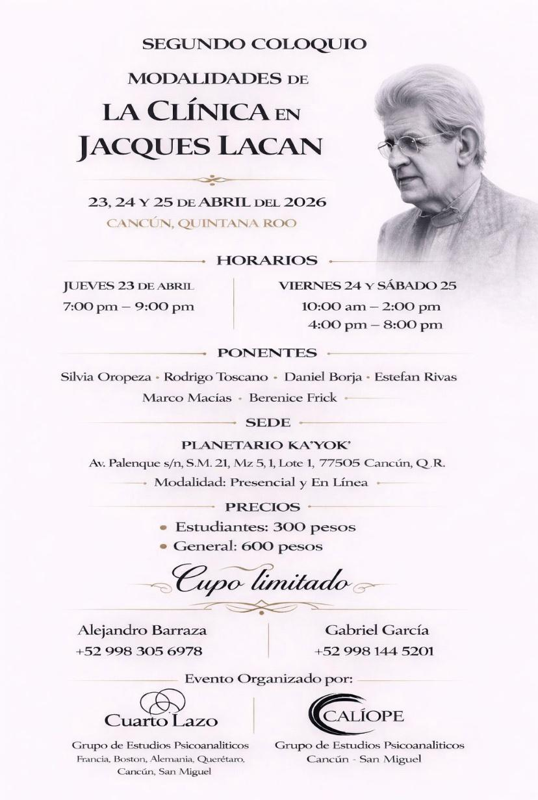
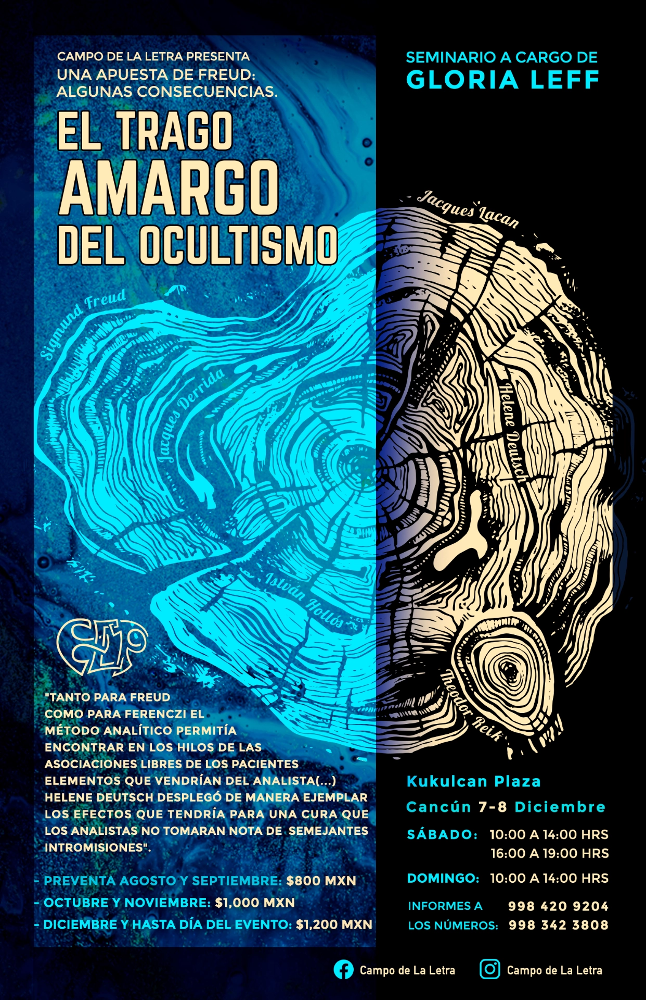
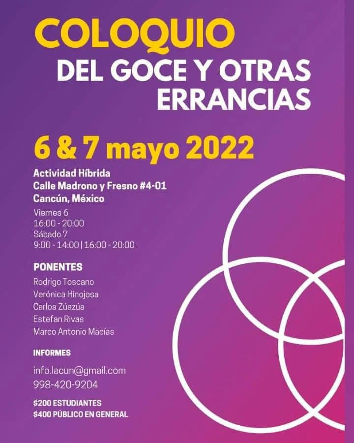
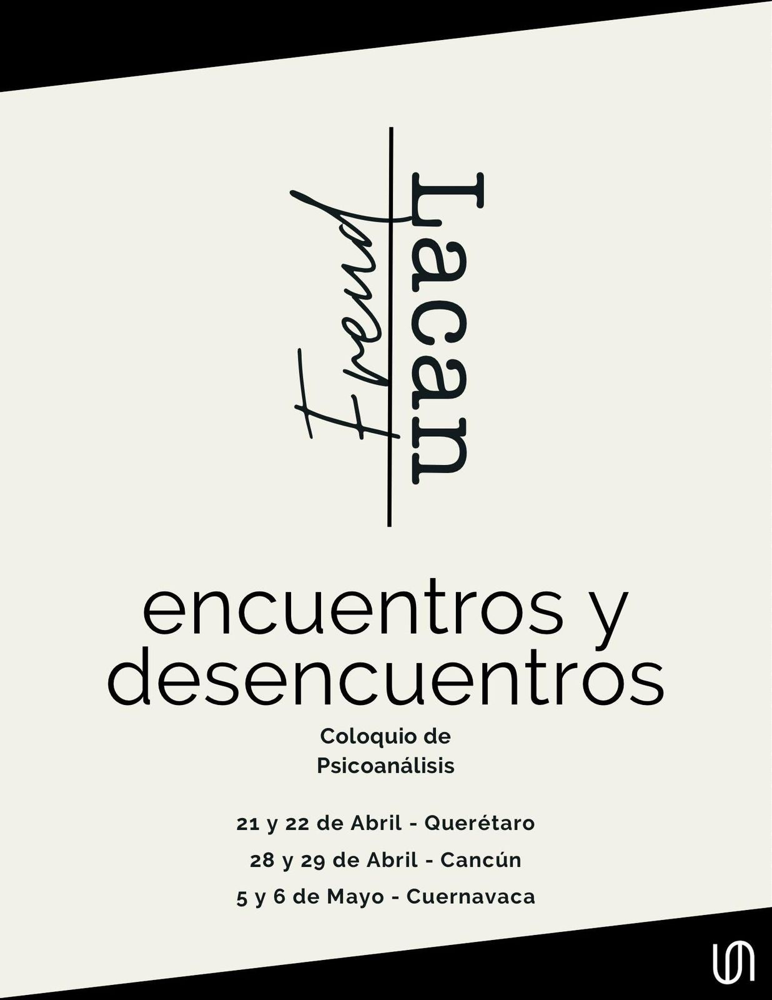
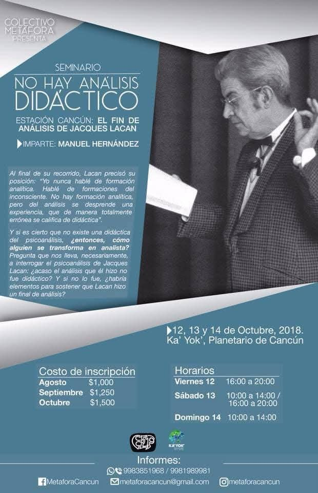
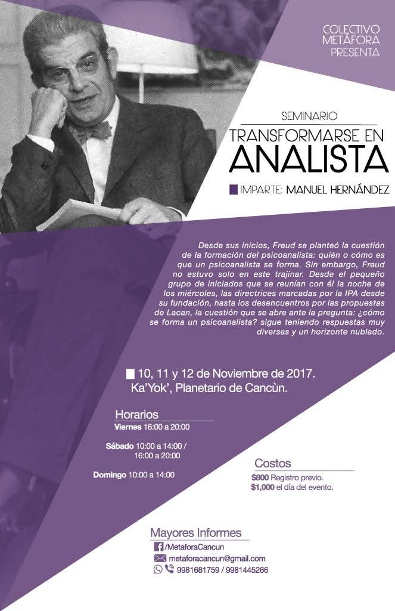

Haz clic en cualquier imagen para verla completa. Usa las flechas para navegar.

01
No Hay Análisis Didáctico

02
Transformarse en Analista

03
Freud / Lacan: Encuentros y Desencuentros

04
Del Goce y Otras Errancias

05
Modalidades de la Clínica en Jacques Lacan

06
El Trago Amargo del Ocultismo